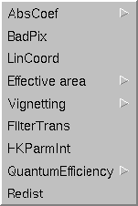

The XMM calibration database is comprised of  calibration
datasets (the current calibration file, or CCF [1]),
and a number of calibration algorithms and access functions (the
calibration access layer, or cal). Many of the datasets in the
CCF contain parameters that are meaningful only in conjunction with
the calibration algorithms provided in the calibration access layer.
calibration
datasets (the current calibration file, or CCF [1]),
and a number of calibration algorithms and access functions (the
calibration access layer, or cal). Many of the datasets in the
CCF contain parameters that are meaningful only in conjunction with
the calibration algorithms provided in the calibration access layer.
The fundamental philosophy of the XMM calibration database is that the only manner to access the calibration data, either in raw form (the contents of the datasets themselves) or in the interpreted form (the output of the algorithms) is through the functional interface provided by the calibration access layer.
While this approach has numerous advantages from the point of view of the task development process, it also means that the effect of a given calibration quantity can only be visualized by writing a small program to set the CAL state, and then call one of the calibration functions with the appropriate input parameters.
The purpose of calview is to reduce the user's programming effort in this sense to nil. To achieve this, and at the same time not require updating whenever a new calibration function is added to the cal, calview interacts with the cal through the interfaces provided by the calibration state server, and the calibration view server. The former is described in detail in cal. Here the two servers are described briefly insofar as they are used by calview.
The calibration state server allows one to set any of the calibration state parameters. These are: instrument, ccd, node, filter and mode identifiers, ccd and camera temperatures, on-chip binning factor, date, accuracy level, and randomization. The top part of the calview widget pane (figure 1) can be used to edit the calibration state. When a variable does not apply the corresponding widget is grayed out.
The behavior of the cal is also affected by the CCF in use. Through the pull down menu labelled ``CCF'' (figure 1) one can direct the cal to use a particular set of calibration datasets. It is possible to point the cal to a CCF directory, to a CCF index file (see cifbuild for information on how to generate one), or add individual CCF components to an existing list. It is also possible to list all of the CCF constituents in use, whether they were provided via the CIF or inserted at run time.
calview is also affected by the environment variables and command line options available to all SAS tasks that make use of the cal. Refer to the cal documentation for details.
The calibration view server affects calview in two areas.
It allows the user to edit a number of state variables that affect the display of the calibration output. The following variables can be set: energy, position in the field of view, spectral order. These variables function as input data to the calibration algorithms. For instance, for a given instrument and CCD the user can select the energy for which the CCD redistribution should be calculated.
Through the calibration view server, calview inquires which ``viewables'' are available given the current calibration state. The list of available viewables is available in the pull down menu labelled ``View'' (figure 2). calview has no a priori knowledge of what calibration data can be viewed. Viewables can have sub-viewables. These are specialized views of a given calibration quantity.
After a viewable is displayed, the list of CCF constituents accessed is displayed.
|  |